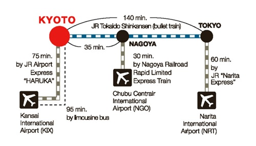
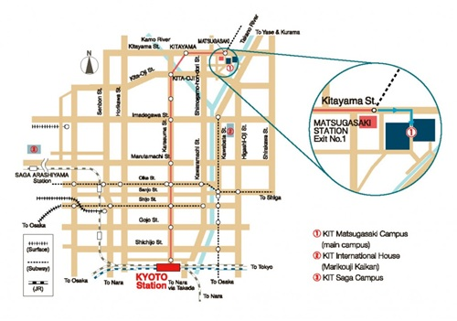

Top Page Members Research Publication Photo Access
Kyoto Institute of Technology
Address: Matsugasaki,Sakyo-ku, Kyoto 606-8585, Japan
Phone: +81-(0)75-724-7611
Access to Matsugasaki Campus (Kyoto Institute of Technology)

